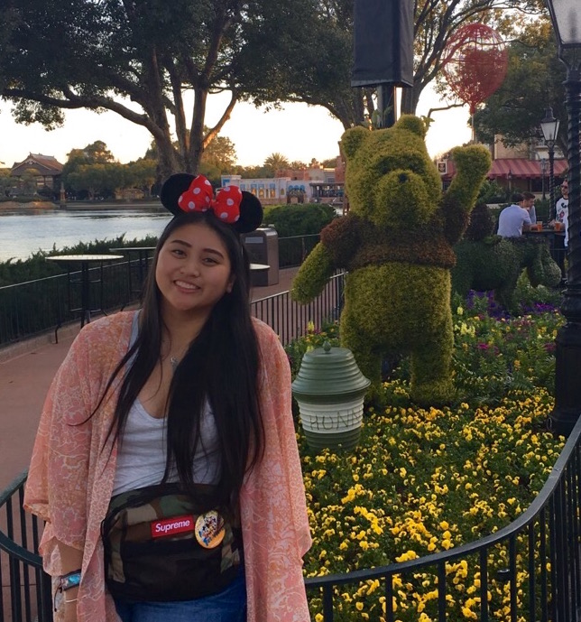

i learned how to make woven ribbon leis when i was in hawaii in 2009 for vacation with my family.
ever since, i've been making them for my family, friends and for anyone who wants to honor and celebrate graduates on their
special day and any other celebrations! thank you for checking out my leis, handcrafted in san francisco.